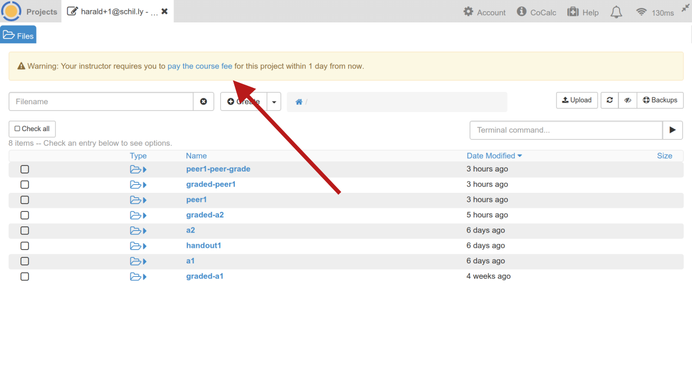
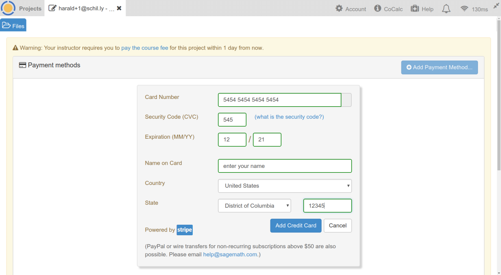
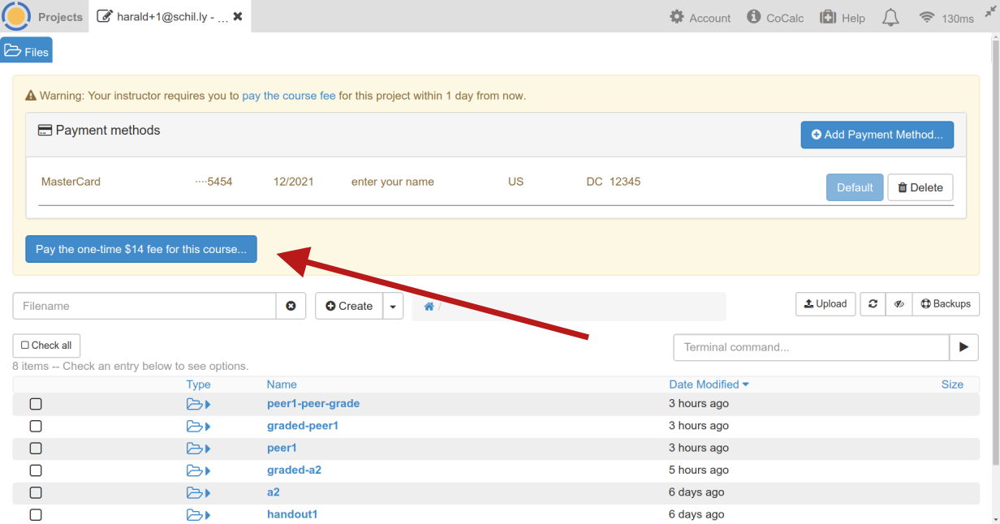
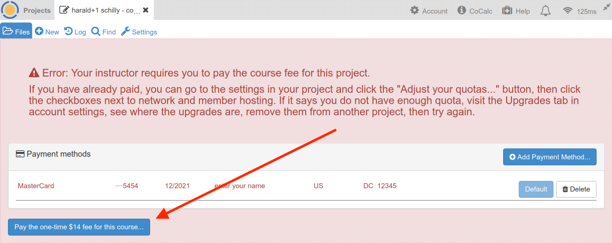

Student Guide¶
Hello and welcome to CoCalc! You are part of a course … now what?
What is CoCalc?¶
CoCalc is a cloud service that provides support for courses based on interactive resources such as Jupyter Notebooks, the Linux terminal , LaTeX document editors, and SageMath Worksheets.
Why CoCalc?¶
As you are all aware technology is moving at an incredible speed, so it is only fair that education catches up! CoCalc is a platform that provides a high amount of versatility when it comes to course material handling and distribution.
Also, being this a cloud service, you can access it from any computer you need to as long as you have internet access on it. Meaning that you do not need to install anything. Plus, it is an OpenSource project.
- Software is already installed: Dozens of programming languages and thousands of libraries and packages are available. There is no need to install them on your computer!
- Unified place of work: witch computers without pausing to install software or move your work to another system.
- Consistent coding environment: Your teacher and you work on CoCalc with the very same software stack.
- Interactive notebooks: Use Sage Worksheets and Jupyter Notebooks to create an executable record of each study session. Make the most of your time when reviewing your work later.
- Your personal study archive: Your work remains accessible and usable in CoCalc long after the course is over. (Except, when your teacher explicitly removes you)
- Extras:
- Time Travel (a detailed edit history)
- Backups: consistent snapshots of all your files in a project
- Real time collaboration & chat
- Online publishing (make selected files public)
What happens when I finish the course/my degree?¶
Once you have finished your course you will still be able to access the material of past courses in your student projects (unless your instructor(s) explicitly delete your project or revoke your access). Regarding any applied upgrades for your course project, they will only be available for the duration of the course.
In cases where your account on CoCalc is managed by the university, make sure you set your password in your account settings. This ensures that you’ll have access later on. Additionally, consider changing your email address of your CoCalc account, once you’re no longer associated with the university.
What I am getting?¶
The basic CoCalc projects get a limited memory size, poor hosting quality and no internet access. It is more than likely that you have been upgraded for your course, if you need to see what resources you have, go to the Settings tab of your course.
Working in your course project¶
Access your course content¶
When you are first added to a course you will receive an email indicating the name of the course and inviting you to create a CoCalc account. Make sure to use the same email to that where you received the invitation. If you do not, you will not have access to the material and the upgrades available the course students. If there is a problem, contact your teaching instructor and ask to check for your email address in the student list of the course.
If everything is setup correctly, you will see a panel as the one in the figure below when signing in to CoCalc. Click on the project of your course to open it.

Once you open the project you will be redirected to your course-specific file directory.
From there you can see all the files you lecturer has shared with you and the assignments. They’re organized in several directories, or sub-directories, and can correspond to assignments or handouts (lecture notes, …).

Your assignments¶
It is more than likely that you will be assigned assignments. When this happens you will have your own copy of the work you need to complete, so you can do all your changes/scripts in there.
Also, note the assignments will have been collected at a due date, after which further changes won’t be seen by the teacher.
It is also possible that as part of the assignment you need to add scripts, a report, or additional files. Make sure that they are all self contained in the directory of the assignment. When your coursework is collected the lecturers will get a copy of the assignment directory, so if you misplaced the documents they will not have access to them, and your marks will suffer.
In particular, do not move or rename any of the directories related to your assignments. Otherwise it is not possible to collect (i.e. “copy over”) your files.
Adding files¶
First, open up “Files” in your project and make sure you’ve navigated to the correct assignment directory (or sub-directory).
There are multiple ways to do it:
- Upload: If you have the files in your local computer navigate to your assignment folder. Then click on the “Upload” button at the top right. It will ask you for your local file(s) and after confirming the dialog it shows you the upload progress.
- Drag and drop: If you have the files in your local computer navigate to your assignment folder. Once there click on the New button on the upper banner. Drag and drop the files in the corresponding box.

- Content in the internet: If you have your files in a GitHub repository or hosted on a publicly accessible web-server, click on the New button. On the file name box paste/write the UTL to the resource and click on the Download from the internet button.

Terminal: if you have your files in a GitHub repository you can create a so called “Terminal file” and copy the contents using:
git clone 'git://the repository URL'
For downloading from a web-server, use
wgetlike that:wget 'http:// ... the URL ...'
Version control¶
One of the best features of CoCalc is the time travel diff feature. You will notice that your Jupyter notebooks (and many more files) have a Time Travel (file history) button.

If you click on this button you will see two sliders that you can move to see previous versions of the file:

This is extremely handy if you want to see a previously saved version of the document or revert to it.
Alternatively, you can also use git from the terminal if this is your preferred version control tool.
Restarting a project¶
Every time you open a Jupyter notebook or a Sage Worksheet, its state is stored in memory. You might experience a slow navigation or sluggish kernel behaviour (e.g. cells not being evaluated).
To solve this you can stop and terminate your running Jupyter Notebook in the file menu under “Close and Halt”.
Alternatively, you can restart the entire project, which will cleanup all running processes. You just need to go to your project settings and click and confirm on “Restart project”.

Contacting your lecturer or TA¶
If you need assistance with a piece of coursework you can contact the using the real-time chat features.

Just click on the speech-bubble icon button located on the upper right hand corner of the piece of work you need help with and start typing straight away.
Your lecturer will be notified when this happens.
Our teacher requires us students to pay. How?¶
Background: as an instructor, you can require students to pay for the course.
As a student, you can/have to pay a one-time fee of $14 (for the whole course) to move your student project to an improved “Member Hosting” server and enable “Internet Access” (see Project Upgrades). This is shown in the screenshots below.
Note
To use the option for the one-time fee, you must open your student project for the course you are taking.
Student projects are named with the student name followed by the course title,
like this: Jane Doe - MATH 101.
If you don’t see your course project listed under Projects (click the tab at the very top left) when you login to CoCalc,
there might be a couple of reasons for that:
- it’s possible that the instructor created your project using a different login (i.e. different email or name) than you are using,
- or that one of you misspelled your email address,
- or that you have not been added to the student list yet.
If the teacher sets a deadline for course payment by the student, the deadline visible below the top row when you open the project.
In the warning you see below, click on the “pay the course fee” link. If you do NOT see this box, it is likely that your instructor has not checked the appropriate boxes in their course configuration file. Please let your instructor know that you’re unable to see the student pay option.
Enter your credit card details:
Click the confirmation button to pay:
If the course already started and the deadline passed, you are required to pay before you can access files in the student project. In that case, the dialog looks similar to the one below:
Note
If you already have a subscription to CoCalc and have available upgrades, it is not necessary to pay the $14 fee. You can simply apply “Member Hosting” and “Internet Access” upgrades to your student project for the course in question.

{kind=link}
{kind=link}
{kind=link}
{kind=link}
{kind=link}